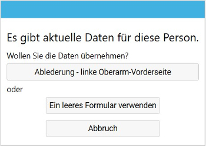
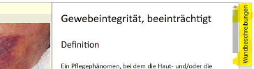

Wunddoku
Wundbeschreibung erstellen
Der einfachste Weg für das Beschreiben einer Wunde mit einem Formular (und mit Foto), ist die Erstellung eines Pflegeberichts. Dazu im Programmbereich Pflege beim Menüpunkt Aufträge die betreffende Person wählen und die Schaltfläche Bericht schreiben klicken. Im sich öffnenden Dialogfenster, kann unten die Schaltfläche Formular hinzufügen und dann Wundbeschreibungen gewählt werden.
Sehen Sie in dieser Videoanleitung wie das Formular ausgefüllt, sowie ein Bild eingelesen und vermessen wird.
Wundbeschreibung aktualisieren
Bei Wunden ist es wichtig, dass deren Veränderungen beschrieben werden. Auch hier ist der einfachste Weg die Erstellung eines Pflegeberichts. Nach dem Klicken von Bericht schreiben, danach Formular hinzufügen und dann Wundbeschreibungen erscheint bei Personen mit einer bereits erfassten Wundbeschreibung folgendes Dialogfenster:

Hier ist es wichtig, nur dann die Schaltfläche Ein leeres Formular verwenden zu wählen, wenn es sich um eine neue Wunde handelt. Für die Übersicht im Verlauf einer Wunde sollte für alle Aktualisierungen von Wundbeschreibungen der Titel der bereits erfassten Wunde gewählt werden.
Im oben dargestellten Beispiel also auf die Schaltfläche Ablederung - linke Oberarm-Vorderseite klicken. Das Formular zeigt eine Kopie der Inhalte wie sie zuletzt bei dieser Wunde erfasst wurden. Das hat den Vorteil, dass nur geändert und nicht das Formular neu ausgefüllt werden muss. Das zuletzt erfasste Bild wird nicht angezeigt, weil bei einer Veränderung der Wunde auch ein neues Bild eingelesen und ggf. vermessen werden sollte.
Keine Veränderung
Das Formular für die Wundbeschreibung sollte nur dann verwendet werden, wenn sich die Wunde und damit der Inhalt verändert hat. Ansonsten ist ein Durchführungsnachweis für den Verbandswechsel (oder auch eine Hautkontrolle, …) als Beleg ausreichend. Ggf. könnte beim Durchführungsnachweis die Bemerkung unveränderter Wundzustand angefügt werden.
Wundbeschreibung als Pflegeprozess
Es gibt Hautveränderungen, allergische Reaktionen, chirurgische Wunden, usw., die medizinisch behandelt werden und keine Aufnahme in den Pflegeprozess erfordern. Wenn die Wundbehandlung jedoch im Sinne einer inderdisziplären Zusammenarbeit erfolgt, ist zu emfpehlen, dass pflegeprozessorientiert gearbeitet wird. Das ist insbesondere dann sinnvoll, wenn es pflegerische Einflussfaktoren gibt, die es zu berücksichtigen gilt (Inkontinenz, Ernährungszustand, Druck- und Scherkräfte bei einem Dekubitus, usw.). Im Pflegeprozess wird dann eine Pflegediagnose sowie ein Ziel aus Pflegesicht formuliert und es werden Interventionen geplant, die über die Wundbehandlung hinaus gehen können. Z.B. betreffend Ernährung, Lagerung (mit enstsprechenden Hilfsmitteln), Schulung von Betreuungspersonen, usw. Der Pflegeprozess sieht regelmäßige Evaluierungen vor, ein Anpassen der Interventionen und ein definiertes Ende bei vollständiger Abheilung der Wunde.
Sehen Sie in dieser Videoanleitung wie die Wundbeschreibung in den Pflegeprozess eingebunden wird.
Ergänzungen
Hier sind einige Dateils zur Arbeit mit Wundbeschreibungen vermerkt:
mehrere Wunden
Bestimmte Wunden können an mehreren Stellen auftreten (z.B. Ulcus Cruris). Dafür gibt es beim Formular für Wundbeschreibungen oben rechts die Schaltfläche weitere Wunde. Durch Klicken öffnet ein weiteres leer Formular für die Beschreibung der zusätzlichen Wundstelle. Die zusammengehörenden Wunden werden oben im Formular wie Register angezeigt. Durch Anklicken kann die Formularanzeige zwischen den Wundstellen gewechselt werden.
Verbindung mit Pflegediagnose
Bei Wundbeschreibung als Pflegeprozess ist das Vorgehen beschrieben, wie im Rahmen der Erstellung einer Pflegediagnose ein Wundbeschreibungsformular eingefügt wird. Eine solche Verbindung kann auch nachträglich geschaffen werden. Dafür muss zuerst die Pflegediagnose erstellt werden. Dann kann über das Bericht schreiben das Wundbeschreibungsformular verwendet werden (wie hier beschrieben). Oben im Feld Pflegeplan kann die Zuordnung zur Pflegediagnose erfolgen.
Eine Pflegediagnose kann nur einem Formular zugeordnet werden. Dieses Formular kann wie oben beschrieben mehrere Wunden zusammenfassen. Sollte es sich um unterschiedliche Wunden handeln, kann die Zuordnung leer bleiben (bei rein medizinischer Behandlung) oder es müssten mehrere Pflegediganosen erstellt werden.
Wundbeschreibung bei der Pflegediagnose aktualisieren
Bei Wundbeschreibung aktualisieren ist das Vorgehen über das Bericht schreiben genannt. Ist das Formular mit einer Pflegediagnose verbunden, kann auch bei Pflegeplan und Klicken von ändern beim entsprechenden Plan das Formular erneut ausgefüllt werden. Dazu rechts im Fenster auf Wundbeschreibungen klicken.
